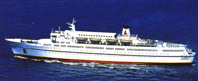

|
|
Kypros ligger helt ideelt for spennende båtturer på egen hånd til Israel og Egypt. Det går båt fra Limassol, og vi kan tilby flere forskjellige turer. Opplev Egypt og se oldtidens syv vidundre, eller Golgata i Israel.
|
CRUISE PÅ EGEN HÅND:
Tjæreborg kan tilby deg tre forskjellige cruise med rederiet Louis Cruise i den østlige delen av Middelhavet. To av cruisene som tar 3 dager, går enten til Egypt eller Israel. Det tredje er en kombinasjon av de to reisemålene som tar 4 dager.
PRAKTISKE OPPLYSNINGER:
Når du kommer om bord får du utlevert nøkkelen til lugaren din. Her finner du en beskrivelse av aktivitetene på skipet. Skipet har et godt kjøkken og det er underholdning i salongen.
Valuta: Det er ikke nødvendig å medbringe israelsk eller egyptisk valuta. Kypriotiske pund aksepteres både ombord på skipet og i de to landene. Små 1-pund sedler er spesielt velkomne.
Visum: Det kreves ikke visum av skandinaviske statsborgere.
Påkledning Ved besøk på hellige steder må knær og skuldre være tildekket.
EGYPT
Du blir hentet med buss ved ditt hotell og kjørt til havnen i Limassol. Om bord serveres en god middag, og du kan slappe av og nyte båtturen, prøve lykken i casinoet eller slappe av med en drink i baren. Tidlig om morgenen 2. dag legger skipet til i den egyptiske havne-byen Port Said. Her venter luftkondisjonerte busser med skandinavisktalende guider. Vi besøker Det Egyptiske Museum, hvor du får se de originale funnene av bl.a. guttefaraoen Tut-ankh-Amon´s grav. Etterpå går turen til Giza, 45 minutters kjøretur fra Kairo, for å se Sfinxen og old-tidens syv vidundre. Det spises medbragt lunsj før byrundturen, der du får et godt inntrykk av nåtidens Kairo, som er preget av sterk kontrast mellom rikdom og fattigdom, kaos og skjønnhet. Om kvelden serveres middag om bord, og det er underholdning i form av show. 3. dag om morgenen ankommer vi havnen i Limassol og du blir transport i buss til ditt hotell.
ISRAEL
Du blir hentet med buss på ditt hotell og kjørt til havnen i Limassol. Her serveres en god middag, og du kan slappe av og nyte båtturen eller gjøre en innsats i skipets casino. Det er også tollfrie butikker og bar om bord. Tidlig om morgenen neste dag legger skipet til i den israelske havnebyen Haifa. Her venter luftkondisjonerte busser med skandinavisk-talende guider. Turen går gjennom Sharondalen, forbi appelsinplantasjer, via Tel Aviv og videre til Jerusalem. Her får du se den berømte Klagemuren, De Hellige Gravers Kirke, Via Dolorosa og Golgata, hvor Jesus ble korsfestet. Etter å ha spist lunsj, kjører vi til Betlehem med Fødselskirken. Etterpå går turen gjennom Israel tilbake til skipet, hvor det serveres middag og det er underholdning om bord. Etter frokost neste morgen legger skipet til havn i Limassol, og herfra går turen tilbake til ditt hotell.
Vi tar forbehold for evt. endringer av turprogrammet.
![[Tjæreborg-Hjemmeside]](http:img/icon.gif)
![[SN Horisont]](http://www.sn.no/img/horisont.gif)